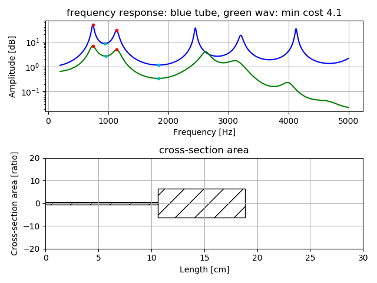
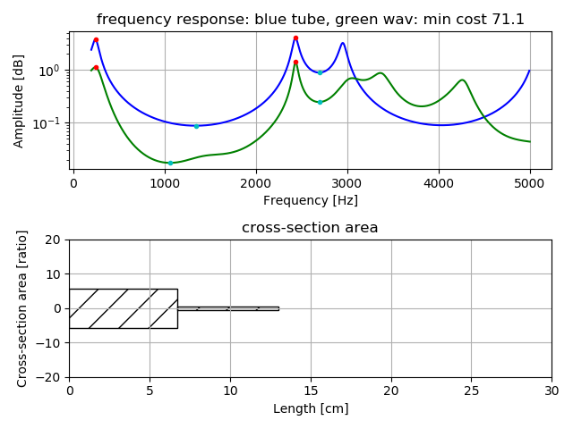
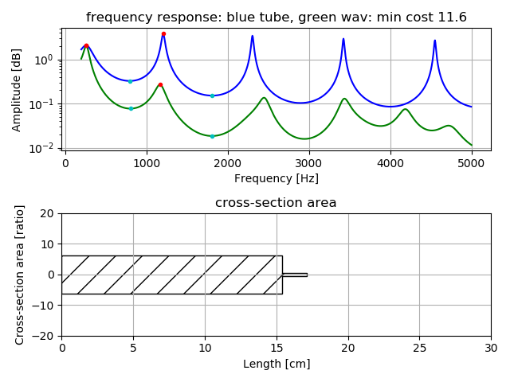
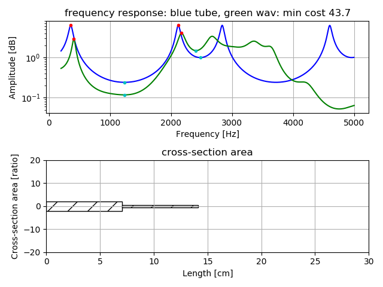
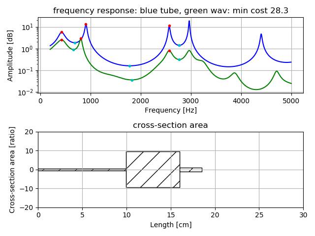

A trial estimation of vocal tract as very simple tube model, two tube or three tube,
using several peak and drop-peak frequencies of vowel voice, by precomputed grid search and downhill simplex method.
example of vowel /a/. Result will save as figures in the result_figure directory. Input wav format should be mono,16bit,16Khz.
python3 pks2tube1.py -w wav/a_1-16k.wav -r result_figure

example of vowel /i/
python3 pks2tube1.py -w wav/i_1-16k.wav -r result_figure

example of vowel /u/
python3 pks2tube1.py -w wav/u_1-16k.wav -r result_figure

example of vowel /e/
python3 pks2tube1.py -w wav/e_1-16k.wav -r result_figure

example of vowel /o/. Specify -t 3, due to vowel /o/ uses three tube model
python3 pks2tube1.py -w wav/o_1-16k.wav -r result_figure -t 3

make precomputed data for grid search to estimate two tube model
python3 pre_compute1.py
It will save pks_dpks_stack_tube2.npz.
make precomputed data for grid search to estimate three tube model
python3 pre_compute1.py -t 3
It will save pks_dpks_stack_tube3.npz.
re-sampling wav to 16Khz sampling
python3 resample1.py -w wav-file-name(mono,16bit)
MIT
except LPC.py